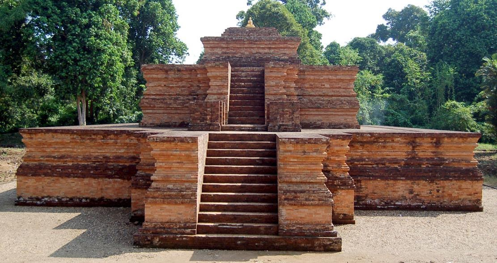

Enam Kerajaan Hindu-Buddha

Kerajaan Bali
Sejarah Kerajaan Bali dimulai sejak masa kuno dan mengalami perkembangan berbagai dinasti...
baca selengkapnya
Kerajaan Kalingga
Kerajaan Kalingga adalah salah satu kerajaan tertua yang pernah ada di...
baca selengkapnya

Kerajaan Medang Kamulan
Kerajaan Medan Kamulan adalah salah satu kerajaan yang berada di kawasan Sumatera Utara, Indonesia...
baca selengkapnya

Kerajaan Melayu
Kerajaan Melayu adalah kerajaan yang berdiri di pantai Sumatera Timur. Beberapa Fakta dan Peninggalanya adalah...
baca selengkapnya
Kerajaan Singosari
Kerajaan Singosari adalah salah satu kerajaan Hindu-Buddha yang berdiri di Jawa Timur pada abad ke-13, sekitar tahun 1222 Masehi....
baca selengkapnya